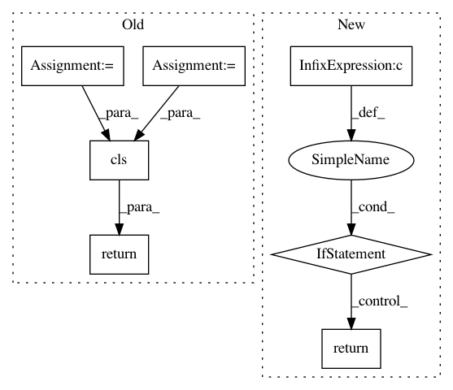

87bb296cf1614091658aad5d875eebfb07e8d47a,scipy/optimize/_trustregion_constr/canonical_constraint.py,CanonicalConstraint,from_PreparedConstraint,#Any#Any#,51
Before Change
if np.all(lb == -np.inf) and np.all(ub == np.inf):
return cls.empty(cfun.n)
n_bounds = lb.shape[0]
if np.all(lb == ub):
fun, jac, hess = cls._equal_to_canonical(cfun, lb)
n_eq = n_bounds
n_ineq = 0
keep_feasible = np.empty(0, dtype=bool)
elif np.all(lb == -np.inf):
fun, jac, hess, keep_feasible, n_ineq \
= cls._less_to_canonical(cfun, ub, keep_feasible)
n_eq = 0
elif np.all(ub == np.inf):
fun, jac, hess, keep_feasible, n_ineq \
= cls._greater_to_canonical(cfun, lb, keep_feasible)
n_eq = 0
else:
(fun, jac, hess, keep_feasible, n_eq, n_ineq) \
= cls._interval_to_canonical(cfun, lb, ub, keep_feasible)
return cls(n_eq, n_ineq, fun, jac, hess, keep_feasible)
@classmethod
def empty(cls, n):
Create an "empty" instance.
After Change
if np.all(lb == -np.inf) and np.all(ub == np.inf):
return cls.empty(cfun.n)
if np.all(lb == -np.inf) and np.all(ub == np.inf):
return cls.empty(cfun.n)
elif np.all(lb == ub):
return cls._equal_to_canonical(cfun, lb)
elif np.all(lb == -np.inf):
return cls._less_to_canonical(cfun, ub, keep_feasible)
elif np.all(ub == np.inf):
return cls._greater_to_canonical(cfun, lb, keep_feasible)
else:
return cls._interval_to_canonical(cfun, lb, ub, keep_feasible)
@classmethod
def empty(cls, n):
Create an "empty" instance.
In pattern: SUPERPATTERN
Frequency: 3
Non-data size: 7
Instances
Project Name: scipy/scipy
Commit Name: 87bb296cf1614091658aad5d875eebfb07e8d47a
Time: 2018-03-31
Author: antonior92@gmail.com
File Name: scipy/optimize/_trustregion_constr/canonical_constraint.py
Class Name: CanonicalConstraint
Method Name: from_PreparedConstraint
Project Name: snipsco/snips-nlu
Commit Name: c51b7d247f7f5320df0e1ffe9e4a6abb5526e22c
Time: 2018-01-18
Author: adrien.ball@snips.net
File Name: snips_nlu/nlu_engine.py
Class Name: SnipsNLUEngine
Method Name: from_dict
Project Name: facebookresearch/pytext
Commit Name: d56c31197dc9a705b7a72d86114d8d5115463349
Time: 2019-06-14
Author: egaudet@fb.com
File Name: pytext/metric_reporters/compositional_metric_reporter.py
Class Name: CompositionalMetricReporter
Method Name: from_config